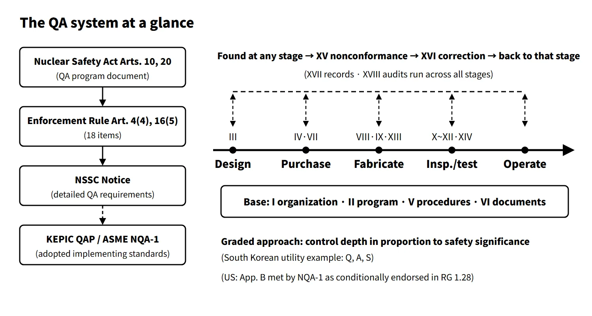

Operation, Regulation & Quality · C-OP-008
Nuclear Quality Assurance (QA) — The 18 Criteria of 10 CFR 50 App. B, NQA-1 and KEPIC QAP, CFSI and Commercial-Grade Dedication
More than inspection: independence, objective evidence and a graded approach, and why a test certificate still needs its own authenticity check.
Nuclear quality assurance (QA) comprises all the planned and systematic actions necessary to provide adequate confidence that safety-related structures, systems and components (SSCs) will perform satisfactorily in service. In the United States it is required through the 18 criteria of 10 CFR 50 App. B; in South Korea through the QA program document of the Nuclear Safety Act and NSSC Notices.
Quality control (QC) — checking that the physical characteristics of an item meet requirements — is part of QA. QA is not inspection alone but a management system that ties together organization, design, procurement, records and audits.
Principle and mechanism
The 18 criteria follow an item through its life
The 18 criteria of App. B (Criterion I–XVIII) state "what must be controlled." How to do it is set by the licensee in its QA manual and procedures. They are easiest to remember when laid on the flow of an item being designed, purchased, fabricated, installed and operated.
![Structure diagram of the 18 criteria of 10 CFR 50 Appendix B: five life-cycle stages (design with III design control; procurement with IV procurement documents and VII purchased items and services; fabrication with VIII identification, IX special processes and XIII handling, storage and shipping; inspection and test with X, XI, XII and XIV; operation, where maintenance and design changes apply the same criteria again), a management base of I organization, II QA program, V instructions, procedures and drawings and VI document control, a feedback band from XV nonconforming items to XVI corrective action, and XVII QA records and XVIII audits across all stages](../../assets/images/concepts/c-op-008-quality-assurance/fig1-appb-18-criteria.webp)
| Group | Criteria (items in South Korea's QA program document) | Key requirement |
|---|---|---|
| Management base | I Organization, II Quality assurance program | The QA organization has authority independent of cost and schedule; designation of covered SSCs; training |
| Design | III Design control | Design inputs reflected, interfaces, design verification by someone other than the original designer |
| Procurement | IV Procurement document control, VII Control of purchased material, equipment and services | QA requirements in procurement documents; supplier evaluation, source inspection and receiving inspection; objective evidence that requirements are met |
| Work basis | V Instructions, procedures and drawings, VI Document control | Procedures with acceptance criteria; distribution of current revisions |
| Fabrication and construction | VIII Identification, IX Special processes, XIII Handling, storage and shipping | Traceability by heat and serial numbers; qualification of welding, heat treatment and NDE |
| Inspection and test | X Inspection, XI Test control, XII Measuring and test equipment, XIV Inspection, test and operating status | Inspectors other than those who did the work; hold points; calibration; status shown by tags |
| Fixing | XV Nonconforming items, XVI Corrective action | Identify, segregate, disposition; for significant conditions adverse to quality, determine the cause and prevent recurrence |
| Proving and checking | XVII Quality assurance records, XVIII Audits | Retrievable records; periodic audits by independent personnel, reported to management |
Three working principles
- Independence: inspections and audits are carried out by people without direct responsibility for the work. This is why Criterion I requires the QA organization to have authority free of cost and schedule pressure.
- Objective evidence: the acceptance condition is not "we made it" but "records show it was made to requirements." That is why records (XVII) and audits (XVIII) close the loop.
- Graded approach: the rigor of the requirements is matched to the safety significance of the item. The utility quality classes Q (safety-related, full App. B), A (augmented quality) and S (general) are an example.
What it means in a plant
Supply-chain control: commercial-grade dedication and CFSI
With parts becoming obsolete and suppliers dwindling, commercial items made outside an App. B program often have to be used in safety-related service. 10 CFR 21.3 defines this as commercial-grade dedication (CGD): an acceptance process in which critical characteristics are identified by safety-function analysis and verified, giving reasonable assurance that the item will perform its intended safety function. The acceptance methods are basically the four of EPRI NP-5652.
- Special tests and inspections
- Commercial-grade survey (verifying the supplier's process controls)
- Source verification (witnessing at the manufacturing site)
- Item and supplier performance record (not used alone; combined with another method)
Once dedication is complete, responsibility for Part 21 defect reporting passes to the organization that performed the dedication.
CFSI stands for counterfeit items (imitating genuine products), fraudulent items (supplied with false markings or false documents) and suspect items (showing signs of either). As in the 2019 question, substandard items are sometimes grouped with them. A suspect item is not a confirmed counterfeit, so it is segregated and held, then judged by investigation and evaluation. Even when a test certificate exists, the authenticity of that document must be checked separately.
![Flow of six gates for safety-related items (procurement requirements, supplier evaluation, source inspection, document authenticity check, receiving inspection, installation approval) each tagged with related App. B criteria; a branch for suspect items leading to segregation and hold, investigation and evaluation, then disposition and corrective action or reportability assessment; a commercial-grade dedication box listing four acceptance methods; and a table comparing South Korean nonconformance reporting under Nuclear Safety Act Article 15-3 with 10 CFR Part 21 deadlines of 60 days, 5 working days, 2 days and 30 days](../../assets/images/concepts/c-op-008-quality-assurance/fig2-procurement-cfsi-gates.webp)
South Korean cases: falsified quality documents in 2012–2013
- November 2012: eight suppliers were found to have forged quality verification certificates in the name of foreign verification bodies and supplied 7,682 parts of 237 items. Most were used at Yeonggwang (now Hanbit) 5 and 6, which were shut down to replace the parts. The NSSC ordered a full survey of safety-class items at all plants.
- May 2013: forged test reports were found for safety-class control cables at Shin-Kori 1 and 2 and Shin-Wolsong 1 and 2. Shin-Kori 2 and Shin-Wolsong 1, then operating, were shut down and restarted after the cables were replaced.
Both cases showed that document-based acceptance (Criteria VII and XVII) presumes the documents are genuine. Supplier control was subsequently strengthened into legal obligations.
Regulatory basis
| Basis | Key point |
|---|---|
| Korea's Nuclear Safety Act, Articles 10(2) and 20(2) | QA program document for construction attached to the construction permit application, and for operation to the operating licence application |
| Enforcement Rule of the Nuclear Safety Act, Articles 4(4) and 16(5) | 18 items to be stated in the QA program document (matching the 18 App. B criteria); the operating licence applies Article 4(4) mutatis mutandis |
| Korean technical standard rule for reactor facilities, Articles 67–85 | South Korean requirements for each of the 18 items (document control, Article 77, comes after inspection, Article 76, so the order differs from the item numbers) |
| NSSC Notice No. 2026-15, "Notice on Detailed QA Requirements for Reactor Facilities" (2026.8.26) | Detailed requirements; applies KEPIC QAP 2000 to 2019 addenda, ASME NQA-1 1994–2015 and ANSI/ANS 3.2 1994–2012 |
| Nuclear Safety Act Articles 15-2 to 15-4, 16 and 22; Enforcement Decree Article 31-2 | Reporting safety-related equipment contracts within 30 days; nonconformance reporting by suppliers and qualification bodies; qualification management body; inspection of suppliers |
| 10 CFR 50 App. B (1970) | The 18 criteria |
| RG 1.28 Rev. 6 (2023.9) | Endorses NQA-1-2017, 2019 and 2022 as methods of meeting App. B |
| ASME NQA-1, KEPIC QAP | Part I 18 requirements + Part II requirements for specific activities + appendices and guidance; KEPIC QAP is based on NQA-1 |
| 10 CFR 21, RG 1.164 (2017) | Defect reporting (deviation evaluation within 60 days; after the responsible officer is informed, initial NRC notification within 2 days and written report within 30 days); CGD guidance (endorsing EPRI 3002002982) |
| IAEA GSR Part 2 (2016) | Extends QA into leadership, management system and safety culture; graded approach |
The matters inspected in the inspection of suppliers are set by Enforcement Decree Article 31-2: (1) whether design, fabrication and qualification meet the licensing criteria (2) matters of contract reporting (3) matters of nonconformance reporting (4) matters the Commission deems necessary. The methods and procedures are set by NSSC Notice No. 2017-32, "Regulation on Inspection of Suppliers of Safety-Related Equipment for Reactor Facilities" (current). Inspections are divided into planned inspections under an annual plan and reactive inspections as needed (Article 2). The Commission sets the next year's plan by the end of December each year, selects the companies to inspect by four criteria, including the safety significance of the items, history of quality problems and inspection history, and may revise the plan quarterly (Article 3). Companies are notified at least 10 days before an inspection, but reactive inspections may be done without notice (Article 4).
The numbering of Enforcement Rule Articles 4(4) and 16(5) and the wording of the 18 items are the same in the current edition, and the framework is the same as when the questions were set in 2001, 2017 and 2025. In August 2026 the detailed-requirements notice was renamed from "…Standard" to "…Notice," and the applicable editions widened from KEPIC QAP up to the 2011 addenda and NQA-1 up to the 2009 addenda to KEPIC QAP up to the 2019 addenda and NQA-1 up to the 2015 edition.
Easily confused pairs
| Quality assurance (QA) | Quality control (QC) | Commercial-grade dedication (CGD) | CFSI verification | |
|---|---|---|---|---|
| Scope | Organization, design, procurement, records and audits as a whole | Inspection and testing of item characteristics | Acceptance of one commercial item | Blocking counterfeit and fraud in the supply chain |
| Question | Does the system give confidence? | Was it made to requirements? | Are the critical characteristics verified? | Are the item and its documents genuine? |
| Basis | App. B, NQA-1 | Criteria X, XI | 10 CFR 21.3, RG 1.164 | Criteria VII and XV, Part 21 |
- App. B vs NQA-1: App. B is the regulatory requirement (what); NQA-1 is the consensus standard for meeting it (how). The NRC endorses specific editions through RG 1.28.
- Part 21 reporting vs South Korean nonconformance reporting: the US requires reporting of defects and failures to comply in basic components. In South Korea, Article 15-3 of the Act extends the duty to report nonconformance with licensing criteria to suppliers and qualification bodies.
Key points at a glance
- Definition: all planned and systematic actions giving confidence that safety-related SSCs will perform satisfactorily (includes QC).
- Basis: 10 CFR 50 App. B / Nuclear Safety Act Articles 10 and 20, Enforcement Rule Articles 4(4) and 16(5), technical standard rule Articles 67–85, NSSC Notice No. 2026-15.
- 18 criteria: (1) organization (2) QA program (3) design control (4) procurement documents (5) instructions, procedures and drawings (6) document control (7) purchased items and services (8) identification (9) special processes (10) inspection (11) test control (12) measuring and test equipment (13) handling, storage and shipping (14) inspection, test and operating status (15) nonconforming items (16) corrective action (17) QA records (18) audits.
- Principles: independence, objective evidence, graded approach (Q, A, S).
- Standards: ASME NQA-1 (endorsed by RG 1.28 Rev. 6), KEPIC QAP.
- Supply chain: CGD = verification of critical characteristics (tests, survey, source verification, performance record); CFSI = blocking counterfeit, fraudulent and suspect items; inspection of suppliers.

This is a model answer, not an official solution. It reflects the criteria current as of 2026.
Exam relevance
Quality assurance has appeared seven times in the Korean Professional Engineer (Nuclear Power) exam: 63rd exam, session 4, Q3 (explain five of the 18 App. B criteria); 67th exam, session 1, Q13 (ASME NQA-1); 2013 exam, session 1, Q13 (using commercial-grade items in place of safety-related items, i.e. CGD); 2017 exam, session 1, Q4 (the 18 basic requirements of nuclear QA); 2019 exam, session 2, Q6 (CFSI verification of equipment); 2020 exam, session 3, Q2 (inspection of suppliers of safety-related equipment); and 2025 exam, session 4, Q1 (the 18 items of the operating QA program document). Typical questions ask you to list and explain the 18 criteria, or to describe CGD, CFSI or supplier inspection. Learn the 18 items in life-cycle order, remember that QA is wider than inspection, and point out that a test certificate itself needs authenticity checking.